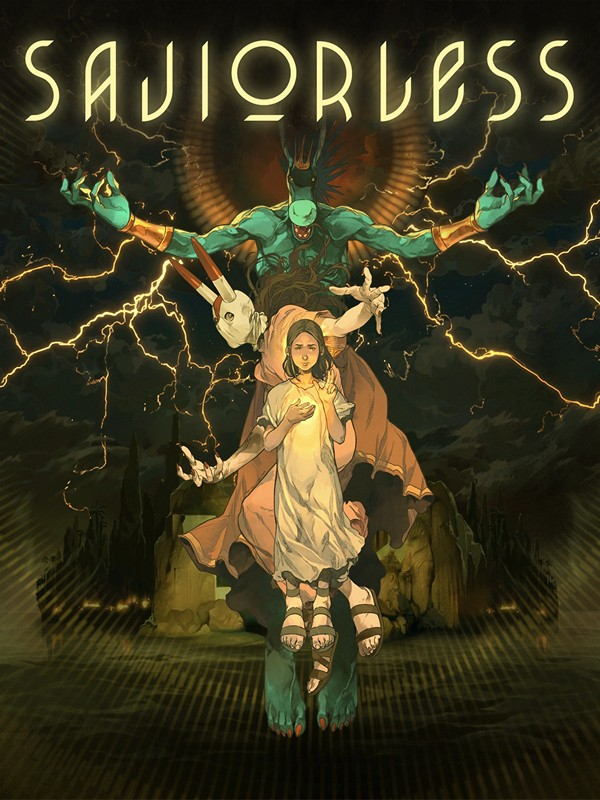
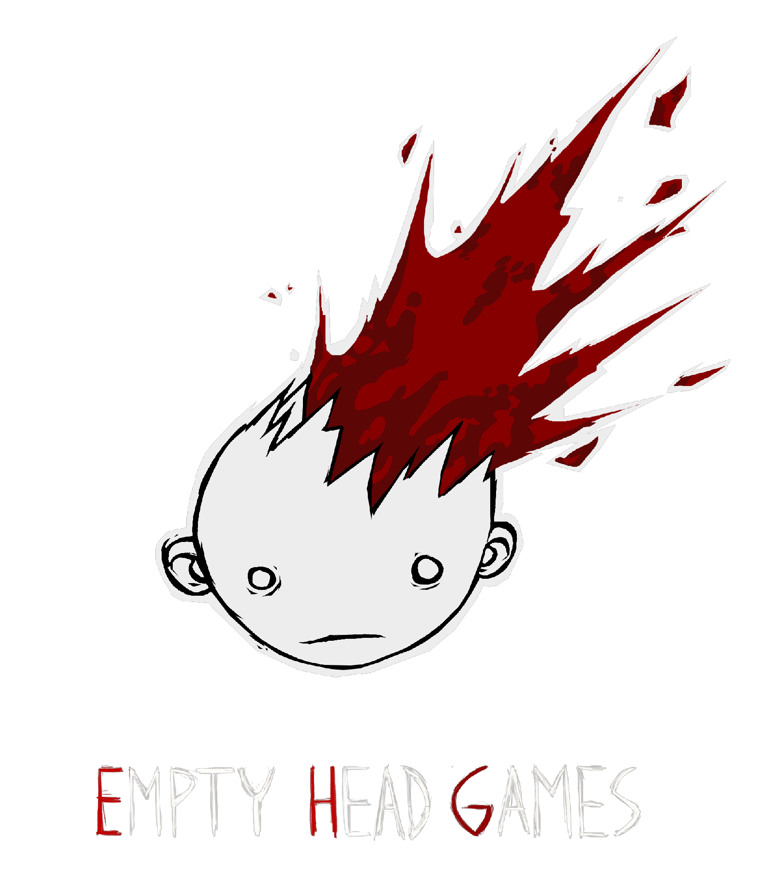
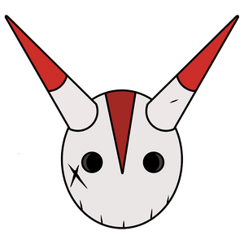

Description
Saviorless is a captivating 2D platformer set in a dark fantasy world with hand-drawn artwork. Players control three protagonists with unique abilities: Antar, the curious child; Savior, the masked avatar; and Nento, the merciless hunter. Players explore treacherous landscapes, fight nightmarish monsters, and unravel a mysterious narrative, all while experiencing dynamic gameplay and an atmospheric soundtrack.
The World of Saviorless
The game is set in a beautiful realm known as the Smiling Islands, a place shrouded in enigma and peril. It is a showcase of hand-drawn art, with every frame meticulously crafted to create an atmospheric and visually striking environment. From the crumbling ruins of ancient civilizations to the twisted landscapes inhabited by nightmarish creatures, the game's world is a feast for the eyes, immersing players in a fascinating dark fantasy adventure.
I want to know more!Gameplay Features
Saviorless offers a rich and immersive gameplay experience that combines platforming, puzzle-solving, and intense combat. Players will:
Unravel a Mystery: As they progress through the game, players will gradually uncover the secrets behind the Smiling Islands, revealing a narrative filled with unexpected twists and turns.
Fight Nightmarish Monsters: Prepare to face hordes of bizarre and terrifying enemies, as well as formidable bosses that stand as obstacles in the path to becoming a Savior.
Collect the Pages: Throughout the game, players will encounter scattered mementos that hold pieces of the story. Collecting these pages is essential to fully unveiling the narrative's depths and intricacies.
Explore the Islands: Immerse yourself in the melancholy atmosphere and crumbling ruins that permeate the Smiling Islands, each location rich with its own stories and secrets waiting to be discovered.
Experience a Broken Narrative: Saviorless presents a unique storytelling approach, where the narrative unfolds in a nonlinear fashion, challenging players to piece together the events that keep Antar from reaching the Smiling Islands and ultimately leading to an unexpected twist of events.
Development History
Saviorless achieved a significant milestone as Cuba's first-ever independent video game to collaborate with an international publisher, gaining global visibility across consoles and online platforms. It faced numerous challenges during its seven-year development. Despite initial suppont and crouwdfunding success, the team faced setbacks due to political tensions, budget constraints, game name trademark conflict, and the loss of a key member. However, with the help of a publisher and the dedication of the team, they persevered through technical difficulties and delays to release a visually stunning game that exceeded their expectations.
I want to know more!A Focus on Visuals
Saviorless is a 2D dark fantasy platformer that blends classic 16-bit gaming aesthetics with a bold visual style. At its core is a striking contrast between realism and the iconic. The characters and creatures are rendered in an exaggerated, almost grotesque manner with realistic anatomical structures - yet sit within a vividly cartoonish world of thick black outlines and flat, pure colors. This bizarre juxtaposition lends the game an unsettling, symbolic quality reminiscent of 19th-century symbolist art.
I want to know more!
Videos
Trailer — YouTube
Screenshots
.png)
.png)
.png)
.png)
.png)
.png)
.png)
.png)
.png)
.png)
Logo & Icon
  {kind=link}
{kind=link}
{kind=link}
{kind=link}
Press Coverage
-
Cuba's first ever indie game launches on Indiegogo
Game Developer -
Cuban studio launches first indie video game via Indiegogo campaign
Benzinga -
Cuban studio launches first indie video game via Indiegogo campaign
Yahoo! Finance -
Primeiro jogo a ser desenvolvido em Cuba tenta financiamento coletivo
Jovem Nerd -
'Savior', primer videojuego indie en Cuba lanza campaña crowdfunding
CiberCuba -
Cuba terá o primeiro projeto na indústria de videojogos indie
Portugal Gamers -
Cuba's self-proclaimed first indie game seeks crowdfunding
VentureBeat -
Savior Aims to be The First Video Game From Politically Torn Cuba
Pacific Network -
Buscan financiamiento en EEUU para primer videojuego independiente cubano
El Nuevo Herald -
Savior is the 'first independent video game' to come from Cuba
PC Gamer -
Savior - Cuba's First Independent Video Game
MMOsite.com -
Savior, el primer videojuego indie realizado en Cuba, busca financiación
Vandal -
Savior might be Cuba's first indie game
Making Games -
Self-Aware Indie Game, Savior, Could Be First For Cuba
Cliqist -
Conozcan 'Savior' el primer videojuego independiente de Cuba
Cubanos por el Mundo -
'Savior', el salvador de los videojuegos cubanos
CubaNet -
Cuba's first indie game, Savior, wants your crowdfunding help
Digitally Downloaded -
Savior: sbarca su Indiegogo il primo indie made in Cuba
Games Princess -
Deze gameontwikkelaar wil een Cubaanse game maken
NRC -
Cuba's First Indie Game 'Savior' Looks Stunning
GameNews+
-
2D platformer Savior, "Cuba's first indie game", arrives on IndieGoGo
IND13 -
Havana duo launches crowdfunding campaign for first Cuban indie video game
Miami Herald -
Self-Aware Indie Game, Savior, Could Be First For Cuba
N4G -
Đất nước Cuba lần đầu tiên cho ra đời một sản phẩm game
GAMEK.VN -
First Cuban indie game becomes surreal platformer Savior
Startlr.com -
Cuba tendrá su primer videojuego indie
OnCuba -
'Savior' El primer videojuego hecho en Cuba.
MegaTV -
Weekly Recap: Skyrim Remaster Launches, More Nintendo Switch Details, Halloween Gaming Events
GameSpot -
Ở tại nước Cuba lần đầu tiên cho ra đời một sản phẩm game.
Vietgiaitri.com -
Gaming Week In Review: First Cuban indie game, 'Evolve' development ceases, 'Ark' update
Daily Emerald -
Savior is the "first independent video game" to come from Cuba
True Viral News -
"Cuba's First Indie Game" Wants to be Much More Than That
Kill Screen -
Savior, un embrión de la potencial industria del videojuego en Cuba
Anait Games -
Episode #612 - Interview with the Developer of Savior, Cuba's First Independent Video Game
PlayerFM -
Episode #612 - Interview with the Developer of Savior, Cuba's First Independent Video Game
Gamertag Radio -
It's Real Hard Making An Indie Game In Cuba
Kotaku -
WATCH: The Amazing Footage From Cuba's First Independent Video Game
We are mitu -
Savior: LO INDIE desde Cuba
Nivel Oculto -
A Cuban Video Game Creator Seeks to Be First in a Post-Fidel World
TheStreet -
Savior's struggle to become Cuba's first indie video game
Polygon
-
Why Cuba's First Indie Video Game Is Finding Its Crowdfunding 'Saviors'
WLRN -
Crowdfunding is building their video game and Cuba's future
Miami Herald -
Savior - The First Indie Game from Cuba
The Geek Spot -
Cuba's First Video Game: Will 'Savior' Make the Post-Fidel Country a Gaming Nation? It Depends on Crowdfunding
News Everyday -
Amid Isolation, Two Cubans Develop Island's First Video Game
NPR -
Power Cuts and Hotspots: Making a Game in Cuba is Pretty Challenging
Waypoint -
Bring the family. Maker Faire Miami will feature robots, technology, games and fun
Miami Herald -
Maker Faire Miami Showcases Latino DIY, Entrepreneurial Ingenuity
CNBC -
Miami is joining 30 international cities that host this huge science fair
Miami.com -
Innovadores muestran robots, videojuegos y la ciudad del futuro en Miami
El Nuevo Herald -
Cuba incursiona en los videojuegos independientes con Savior
El Politico -
Presentaron en Miami primer videojuego creado en Cuba
El Pulzo -
Inventores independientes muestran creaciones en Miami
Milenio.com -
Savior Designer Josuhe Pagliery on Creating Cuba's First Indie Video Game
Miami New Times -
Savior, The First Video Game Created In Cuba, Is Making Its Way Out To The World
Monkeys Fighting Robots -
What We're Playing: Sniperclips Prey
Gaming Nexus -
Cuban games start to find a foothold in global game scene
Polygon -
Chicago's first art gallery devoted to video games will open next month
Chicago Reader -
Chicago's First Video Game Art Gallery Opening Next To The 606
DNA Info -
Savior: Politics, Game Development, Performance Art in an Evolving Cuba
RollingStone
Saviorless Credits
- Josuhe H. Pagliery
- Creator, Artist, Game and Level Designer, Writer
- David Darias
- Technical Designer, Programmer, Level Builder
Additional Team
- Ruben Cruces
- Additional Level Design
- Tony Nodarse
- Animation, Freelancer
- German Carrasco
- Soundtrack Composer, Sound Designer
Contact
- Inquiries
- contact@saviorless.com
- twitter.com/saviorlessgame
- facebook.com/saviorthegame
- Web
- saviorless.com